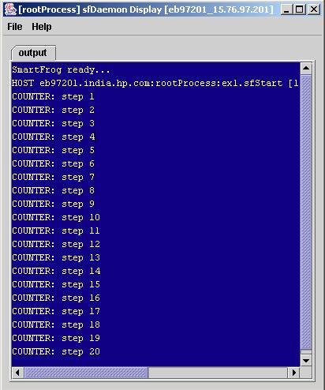
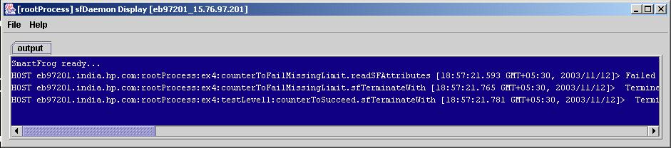
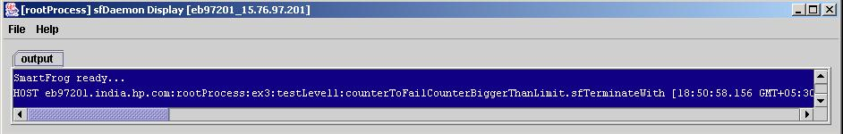
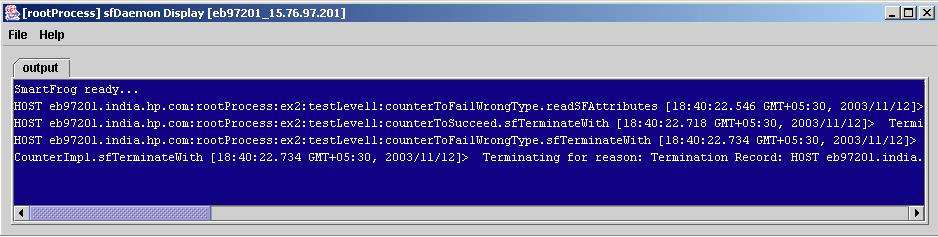

Goal of the component:
This component generates a counter with a given seed value and increments it by 1 untill it reaches the limit.
Internal Functionality of the component:
The Counter component data is described in the components.sf file. The Counter component requires a mandatory attribute "limit" to be defined by the user. The component description class CounterImpl.java implements the lifecycle methods of this component. The counter data attributes are read from the sf description in sfDeploy method and the counter thread is started using these in sfStart method. Once the limit is reached the counter thread is stopped in sfTerminatewith method and the component terminates. The string names for Counter component are described in interface Counter.java.
Examples of use:
There are four examples showing the use of counter component.
Example1:
This example creates a component that generates a counter from 1 to
20.
Modifying example1:
The component description for this example can be seen or modified
in file
example.sf
Steps to run example1:
- Start daemon
on
localhost
- Start example.sf
- Stop daemon
Expected Output:

Example2:
This example has 3 primitive sub-components, each using the Counter
component in a different way.
component1:
This component generates a counter from 1 to 4.
component2:
This component fails because of wrong type of mandatory attribute "limit".
component3:
This component fails because of missing mandatory attribute "limit".
Modifying example2:
The component description for this example can be seen or modified
in file
example2.sf
Steps to run example2:
- Start daemon
on localhost
- Start example2.sf
- Stop daemon
Expected Output:

Example3:
This example has 3 primitive sub-components, each using the Counter
component in a different way.
component1:
This component fails because the seed value is bigger than the limit..
component2:
This component fails because of wrong type of mandatory attribute "limit".
component3:
This component fails because of missing mandatory attribute "limit".
Modifying example3:
The component description for this example can be seen or modified
in file
example3.sf
Steps to run example3:
- Start daemon
on localhost
- Start example3.sf
- Stop daemon
Expected Output:

Example4:
This example has 3 primitive sub-components, each using the Counter
component in a different way.
component1:
This component generates a counter from 1 to 4.
component2:
This component fails because of wrong type of mandatory attribute "limit".
component3:
This component fails because of missing mandatory attribute "limit".
Modifying example4:
The component description for this example can be seen or modified
in file
example4.sf
Steps to run example4:
- Start daemon
on localhost
- Start example4.sf
- Stop daemon
Expected Output:
